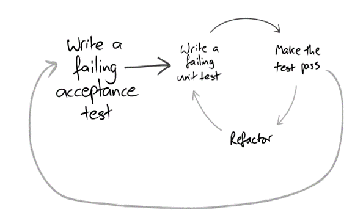

BDD / TDD par l’exemple
 BDD / TDD par l'exemple
18.09.2018
BDD / TDD par l'exemple
18.09.2018
Programme
Pourquoi faire du TDD
Double boucle de test
Discussion
Pratique : Message receiver
Pourquoi faire du TDD
+
Permet d’avoir des feedbacks rapides
Permet de minimiser les defects
Permet d’avoir tout de suite des tests de non régressions
Les tests deviennent une sorte de living documentation
A moyen terme, accélère les développement
-
Prend un peu de temps à apprendre (moyen terme)
Les tests doivent être maintenus (donc une bonne chose de les refactorer quand nécessaire)
Double boucle
Commencez avec la boucle BDD
Complétez la avec la boucle TDD
Boucle BDD
Ecrire une step definition
La faire compiler
La faire fonctionner (c’est là qu’intervient la boucle TDD)
Ecrire la step definition suivante
Boucle TDD
Ecrire un test case
Le faire compiler
Faire passer le test
Refactorer / Eliminer duplication (SOLID !!)
Ecrire le prochain test case